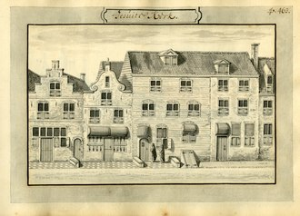

Johannes Vermeer (/vɜːrˈmɪər, vɜːrˈmɛər/ fur-MEER, fur-MAIR, Dutch: [fərˈmeːr], see below; October 1632 – December 1675) was a Dutch Baroque Period[3] painter who specialized in domestic interior scenes of middle-class life. During his lifetime, he was a moderately successful provincial genre painter, recognized in Delft and The Hague. Nonetheless, he produced relatively few paintings and evidently was not wealthy, leaving his wife and children in debt at his death.[4] Vermeer worked slowly and with great care, and frequently used very expensive pigments. He is particularly renowned for his masterly treatment and use of light in his work.
Relatively little was known about Vermeer's life until recently.[13] He seems to have been devoted exclusively to his art, living out his life in the city of Delft. Until the 19th century, the only sources of information were some registers, a few official documents, and comments by other artists; for this reason, Thoré-Bürger named him "The Sphinx of Delft".[14] John Michael Montias added details on the family from the city archives of Delft in his Artists and Artisans in Delft: A Socio-Economic Study of the Seventeenth Century (1982).
Johannes Vermeer was baptized within the Reformed Church on 31 October 1632.[15][16][a] His mother, Digna Baltens (c. 1596 – 1670[20][21][22]),[b] was from Antwerp.[23][24][25][18][22] Digna's father, Balthasar Geerts,[21] or Gerrits,[22] (born in Antwerp in or around 1573)[21] led an enterprising life, and was arrested for counterfeiting.[21][18] Vermeer's father, named Reijnier Janszoon, was a middle-class worker of silk or caffa (a mixture of silk and cotton or wool).[Note 1] He was the son of Jan Reyersz and Cornelia (Neeltge) Goris.[c] As an apprentice in Amsterdam, Reijnier lived on fashionable Sint Antoniesbreestraat, a street with many resident painters at the time. In 1615, Reijnier married Digna. The couple moved to Delft and had a daughter named Gertruy who was baptized in 1620.[Note 2] In 1625, Reijnier was involved in a fight with a soldier named Willem van Bylandt who died from his wounds five months later.[27] Around this time, Reijnier began dealing in paintings. In 1631, he leased an inn, which he called "The Flying Fox". In 1635, he lived on Voldersgracht 25 or 26. In 1641, he bought a larger inn on the market square, named after the Flemish town "Mechelen". The acquisition of the inn constituted a considerable financial burden.[Huerta 1] When Reijnier died in October 1652, Vermeer took over the operation of the family's art business.